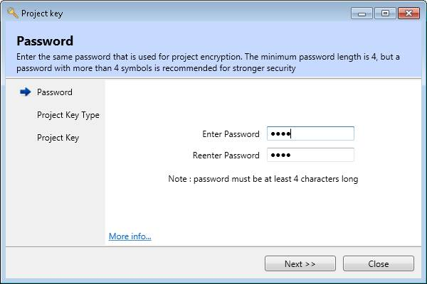
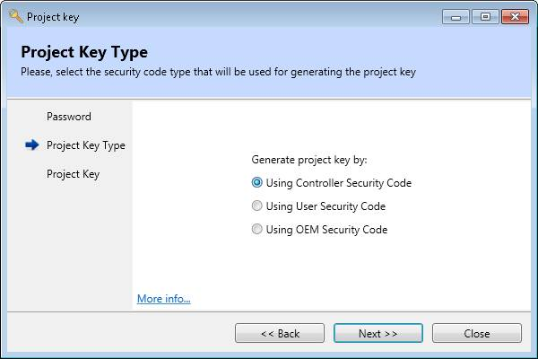
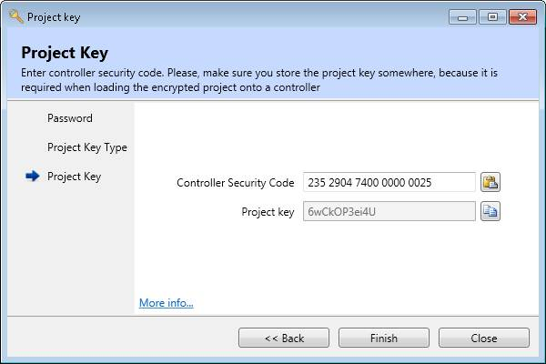
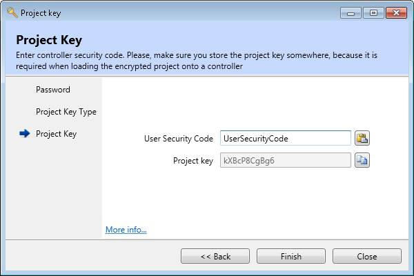

The project key generation process involves 3 stages as follows:
The process starts with entering the same password, that is used for project encryption. When a project has been encrypted already and the project encryptor main window have not been yet closed, the last user password is remembered for user's convenience.

There are three options available:

When using Controller Security Code, the decryption "Project Key" is derived from "Project Password" and Motion Coordinator's unique security code.
When using User Security Code, the decryption "Project Key" is derived from "Project Password" and a custom user-supplied User Security Code".
When using OEM Security Code, the decryption "Project Key" is derived from "Project Password" and a custom OEM-supplied security code.
The next step is to generate a decryption "Project Key" by entering a valid security code
When a valid security code is entered the corresponding project key is generated automatically. Both the project key dialog in Motion Perfect and the project encryptor main window have copy and paste buttons to make transferring the number between the applications easier.

When started from within Motion Perfect, and Motion Perfect is connected to a Motion Coordinator, the Controller Security Code will be automatically filled in. Otherwise, the controller security code, or the user security code, or the OEM security code, must be entered into the controller security code text entry box.
The controller security code is a 15-digit numeric code which is used to identify the Motion Coordinator and part of its hardware configuration. This can be obtained from the Feature Enable tool in Motion Perfect of from the project key dialog which Motion Perfect displays when an encrypted project is specified for loading. Windows copy and paste can be used to make the process easier.

When User Security Code feature is enabled on the Motion Coordinator, users can set a custom security code, that is stored on the Motion Coordinator. The same code should be used when generating the decryption "Project Key". When an encrypted project is loaded on the Motion Coordinator, it is decrypted with the decryption "Project Key" that is compared against the stored User Security Code on the Motion Coordinator.
When OEM Security Code feature is enabled on the Motion Coordinator, equipment manufacturers can set a custom security code, that is stored on the Motion Coordinator. The same code should be used when generating the decryption "Project Key". When an encrypted project is loaded on the Motion Coordinator, it is decrypted with the decryption "Project Key" that is compared against the stored OEM Security Code on the Motion Coordinator.